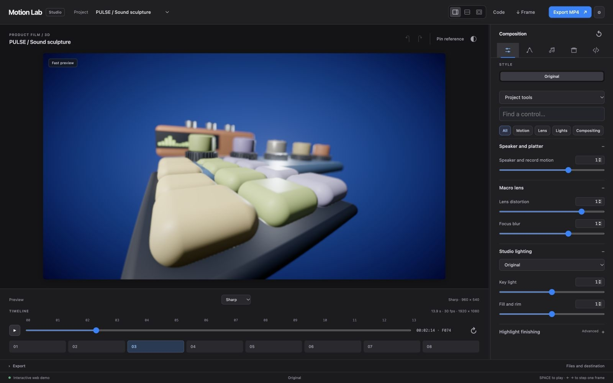
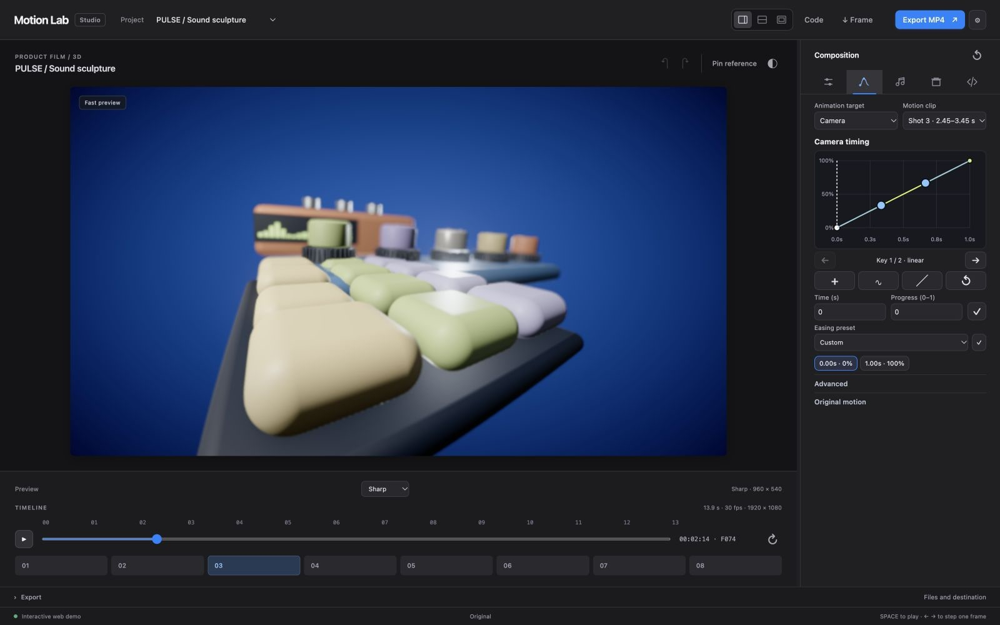

Motion
Scene-specific camera and object groups with separate shot windows.
CODE MOTION LAB
Build a scene with a coding agent. Shape the details in the studio. Render the film on your own machine.
Editable 2D, hybrid and 3D scenes. Your code and timing stay yours.
 01 / PULSECYCLES · 3D PRODUCT FILM
PULSESound, shaped into motion.
01 / PULSECYCLES · 3D PRODUCT FILM
PULSESound, shaped into motion.
ONE CONTINUOUS WORKFLOW
Ask your coding agent to shape the code and scene recipe. Open the same scene in Motion Lab to refine its controls, timing and finish.


MADE IN MOTION LAB
Finished films made from editable scene code, controls, camera moves and sound.
SCENE FILM
Sound objects, tactile materials and cinematic movement in a rhythmic 3D studio.
TOOLS THAT FOLLOW THE SCENE
Each scene opens with tools chosen for its content. Original keyframes and evaluated camera paths are visible before you adjust the timing. The full catalog stays available for deeper changes.
Scene-specific camera and object groups with separate shot windows.
Framing, focus, distortion and authored optical effects.
Agent-selected light presets, then direct control of key, fill and rim.
Exposure, contrast, saturation, grain and finishing effects.
INDEPENDENT TARGETS
Choose a camera or object group, then shape it inside one shot window. Other groups, captions, cuts and film duration keep their own timing.
Explore motion curves ↗SAFE TO EXPLORE
Save named versions, compare a direction with your current scene, and step through edits with undo and redo. Curated light, compositing and easing recipes stay scene-specific, with up to four choices in each palette.
PREVIEW HERE. RENDER LOCALLY.
Motion Lab renders the scene recipe at each requested time. Review a frame, listen to the sound design, then choose the delivery path that fits.
3D previews use Three.js; procedural 2D uses Canvas. Auto adapts while you work; Fast, Balanced and Sharp are there when you choose.
AutoFastBalancedSharpExport videos with Three.js, or choose the local Cycles adapter for PULSE. Cycles delivers MP4 and PNG; Three.js also offers WebM and ProRes.
MP4WebMProResBuild procedural music and movement-driven 2D or 3D effects alongside the scene.
Sound design guide ↗In supported browsers, the public Studio exports browser-rendered video at 720p or 1080p, PNG frames and JSON recipes. MP4 is available when the browser supports its encoder; otherwise it offers WebM. This uses the real-time Three.js/Canvas path. Blender Cycles requires Motion Lab running on your computer with Blender installed; the current adapter supports PULSE only. This website does not run Cycles or server-side renders. Mixed shots require prepared render inputs and a local compositing plan.
FOR THE CURIOUS
Scenes are parameterized code and JSON, sampled at an exact time. Motion curves can be grouped by camera or object, with one chosen shot window at a time. The source stays open when you want to go beyond the controls.
// A value at any time
{
"scene": "bax",
"animation": {
"version": 1,
"enabled": true,
"rate": 1,
"groups": {
"camera": {
"start": 0, "end": 2.2,
"rate": 1,
"keys": [
{ "t": 0, "value": 0, "ease": "linear" },
{ "t": 2.2, "value": 1, "ease": "linear" }
]
}
}
}
}SEPARATE STILL EXPERIMENT
An optional path-traced still of the PULSE model explores reflected light, ceramic, rubber, leather and metal. It is a separate experiment from the motion-film renderer.

The experiment uses an adapter for this model and exports an image. It does not replace the standard studio renderer or create a video.
Read the still-render guide ↗TAKE THE SCENE HOME
Open the studio to explore a scene, or clone the project to render video and manage project files locally.
Tested on macOS · Node.js 22.12+ · Google Chrome. Internet is needed for the first installation.
git clone https://github.com/AndreXes03/motion-lab.git cd motion-lab npm ci npm run viewer
The app renders on your machine.
Setup and usage ↗